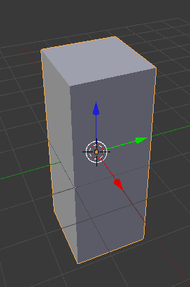
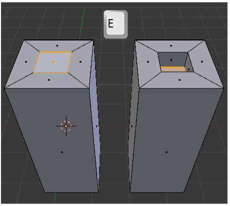
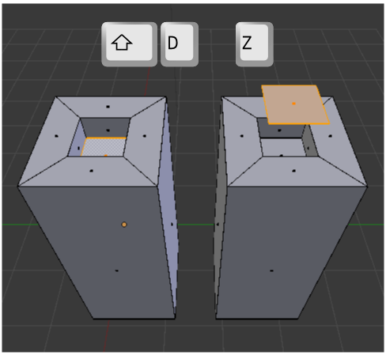
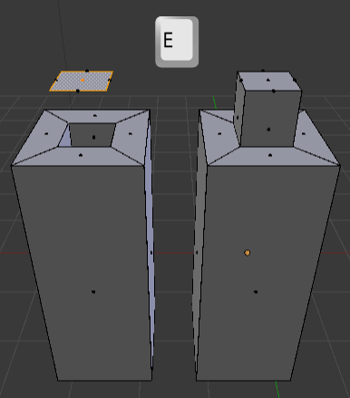
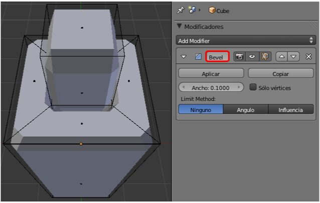
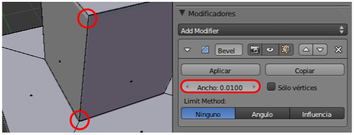
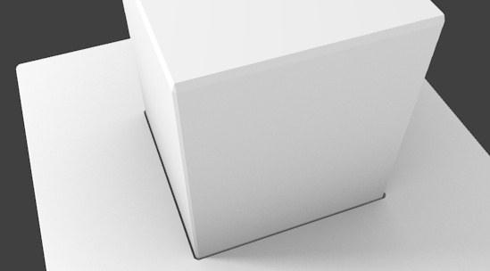
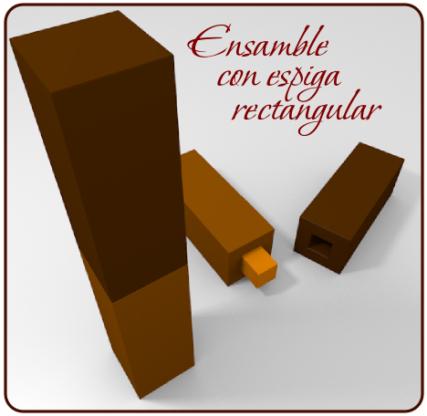

Material didáctico: Ensamble con espiga
Queremos representar un ensamble con espiga rectangular de dos piezas de madera. Además de poner en práctica lo aprendido aparecerán nuevos conocimientos: la duplicación de vértices, separar conjuntos independientes dentro de una misma malla y un nuevo modificador.
Partimos del cubo inicial que escalamos en uno de los ejes para que muestre un aspecto como este. Nosotros hemos escalado en Z ("SZ").

Pasamos a Modo Edición  , seleccionamos la cara superior y hacemos una extrusión nula ("E+Intro"). Ya sabemos que acto seguido tenemos que hacer un escalado o un desplazamiento para evitar los puntos dobles. En nuestro caso necesitamos un escalado ("S").
, seleccionamos la cara superior y hacemos una extrusión nula ("E+Intro"). Ya sabemos que acto seguido tenemos que hacer un escalado o un desplazamiento para evitar los puntos dobles. En nuestro caso necesitamos un escalado ("S").
Ahora la extrusión ("E") es hacia adentro.
Vamos a duplicar vértices y no objetos enteros. Queremos que la espiga parta de la forma que ha generado el hueco; así que con esa cara seleccionada hacemos el duplicado y desplazamos hacia arriba ("Shift_D Z").
Esa cara la extruimos ("E") hacia abajo para que entre en el hueco de la espiga.
¿Por qué no nos limitamos en su momento a extruir hacia afuera y hubiéramos llegado a lo mismo? Porque ahora vamos a añadir al objeto un modificador Biselado. Este modificador va a anular la sensación de aristas de 90º tan perfectas.
Hay que darle un valor muy pequeño al parámetro Ancho; sólo queremos un pequeño bisel.
Es en el render donde mejor se aprecia cómo ese modificador aporta credibilidad a las esquinas. El bisel en la zona de la entrada para la espiga es donde se comprueba el potencial del recurso que hemos usado.

Necesitamos un duplicado del objeto sin la espiga. Como aquel duplicado que hicimos se realizó en Modo Edición  resulta que pertenece a la misma malla. Es necesario separar los dos elementos para que sean objetos independientes. Esto lo hacemos desde Modo Edición
resulta que pertenece a la misma malla. Es necesario separar los dos elementos para que sean objetos independientes. Esto lo hacemos desde Modo Edición  con la secuencia Malla/Vértices/Separar. Se despliega un menú del que elegimos Por partes perdidas; eso hace que los conjuntos de vértices independientes entre sí se separen en objetos también independientes.
con la secuencia Malla/Vértices/Separar. Se despliega un menú del que elegimos Por partes perdidas; eso hace que los conjuntos de vértices independientes entre sí se separen en objetos también independientes.
Ahora ya podemos seleccionar el objeto grande, duplicarlo ("Shift_D") y hacer con él la composición que más atractiva nos resulte.
